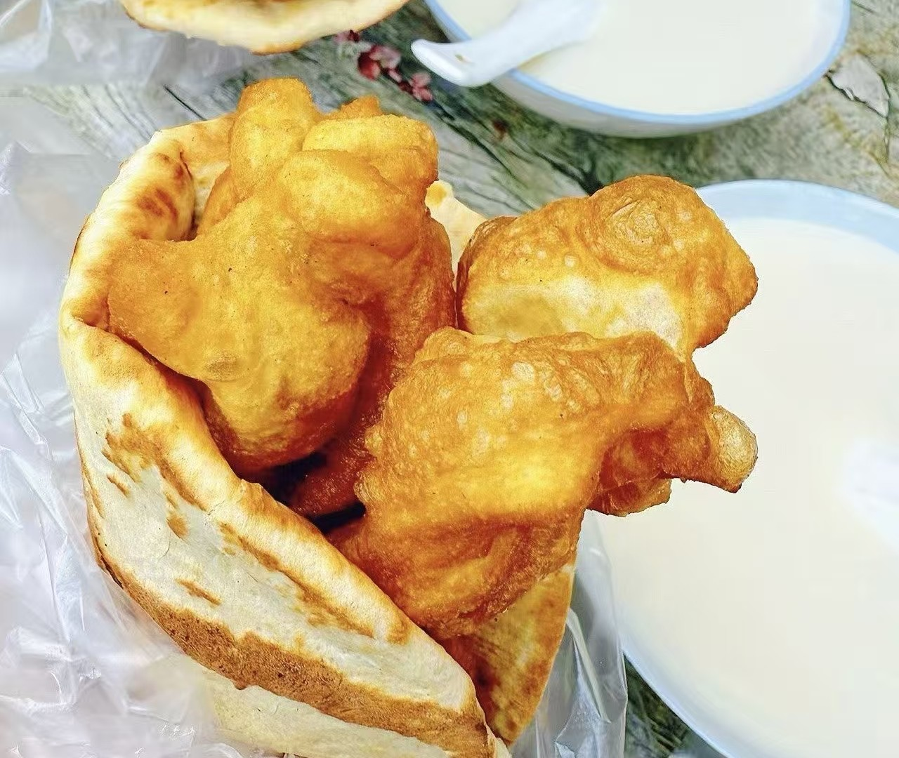
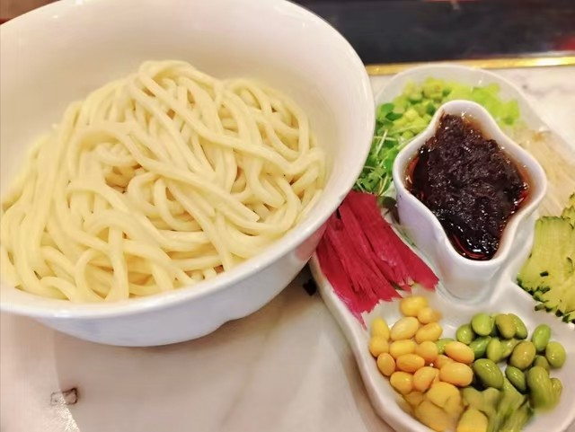
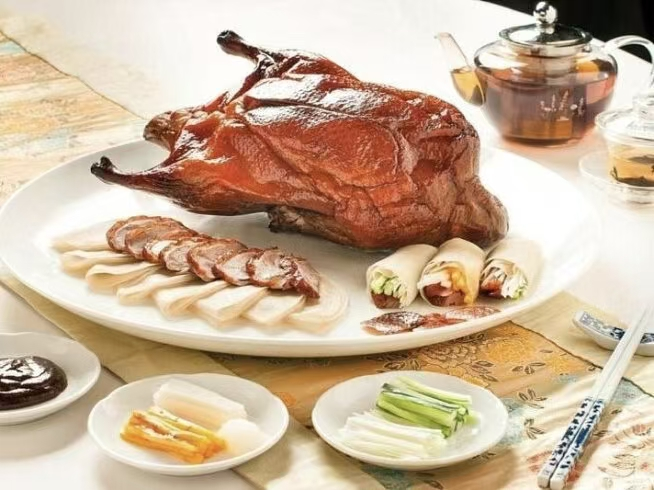
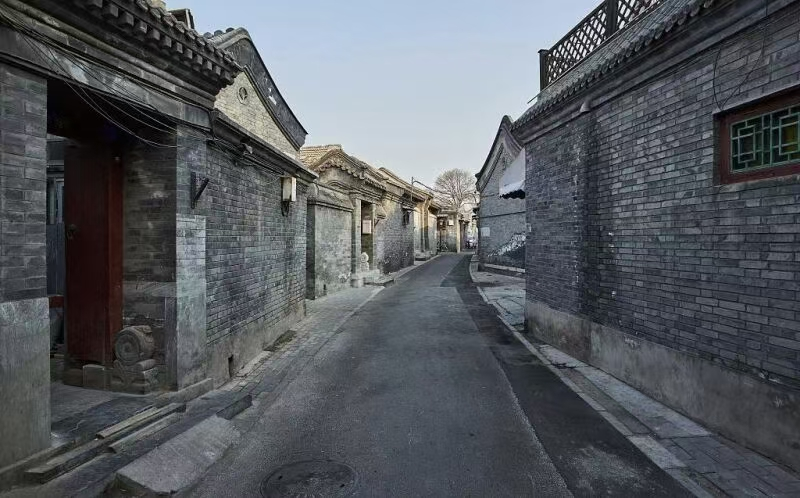

Shaobing & Soy Milk Breakfast
A simple but iconic Beijing morning. Crisp sesame flatbread paired with warm soy milk reflects the city’s everyday rhythm and comfort.
Deep Dive Page
To understand Beijing, you should not only see it—you should taste it.
Why Food?
Beijing’s food culture reflects the city’s layered identity. Royal dining traditions, northern wheat-based comfort food, street snacks, and neighborhood eateries all shape the local experience.
This page is aimed at travelers who want an authentic side of the city beyond luxury restaurants and mainstream tourist recommendations.

Must-Try Local Picks
A simple but iconic Beijing morning. Crisp sesame flatbread paired with warm soy milk reflects the city’s everyday rhythm and comfort.

Thick wheat noodles topped with savory soybean paste, cucumber, and vegetables— a classic local dish deeply rooted in northern Chinese food culture.

Famous worldwide, but best experienced in the city itself where crispy skin, thin pancakes, and ritualized serving become part of the performance.
Where to Explore
Small family-run restaurants, dumpling houses, tea shops, and hidden courtyards offer a slower and more intimate food journey.
Great for street snacks, grilled skewers, desserts, and spontaneous local food discovery after sunset.
The most authentic flavors are often found where local people still eat every day, not where tourists gather.

Experience Design
This page is designed not just to inform, but to create sensory curiosity. The visual layout, food photography, warm color palette, and compact storytelling help users imagine Beijing as a place they can personally enter.
Instead of “top 10 tourist attractions,” this page focuses on emotional connection, appetite, and local authenticity.